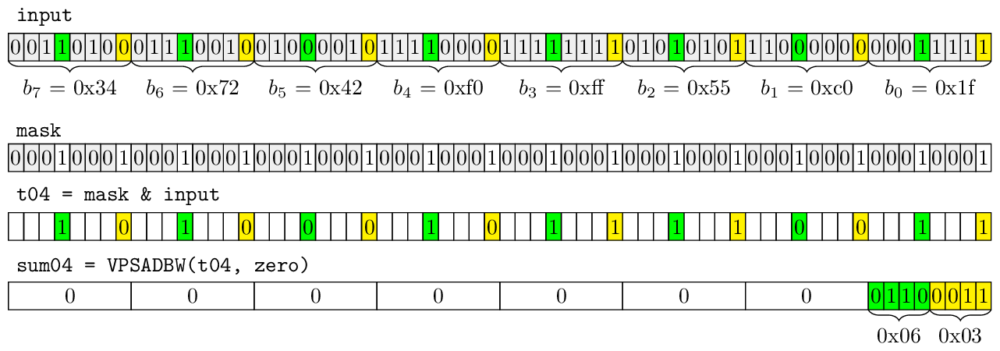
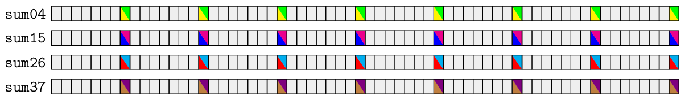
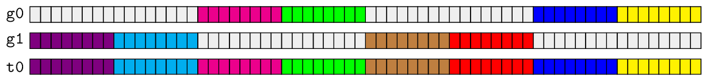

| Author: | Wojciech Muła |
|---|---|
| Added on: | 2019-12-31 |
Table of contents
Positional population count (pospopcnt) is a procedure that calculates the histogram for bits placed at given position in a byte, word or double word etc. from larger stream of such entities.
This is a very naive implementation of 8-bit pospopcnt:
void pospopcnt(const uint8_t* data, size_t n, uint64_t histogram[8]) { for (size_t i=0; i < n; i++) { const uint8_t byte = data[i]; for (int bit=0; bit < 8; bit++) histogram[bit] += (byte >> bit) & 0x01; } }
For example [3, 3, 2, 4, 1, 2, 3, 1] is the pospopcnt result for following five bytes:
A few 16-bit pospopcnt procedures were described in article Efficient Computation of Positional Population Counts Using SIMD Instructions by Marcus D. R. Klarqvist, Daniel Lemire and me. The library maintained by Marcus provides pospopcnt procedures for 8, 16 and 32-bit words.
This article shows a neat utilization of SAD instruction to calculate 8-bit pospopcnt. It's not the fastest one, but I really like the whole algorithm.
SSE, AVX2 and AVX512BW have instruction SAD (PSADBW, VPSADBW) which calculates the sum of absolute differences of bytes.
uint64_t sad(uint8_t A[8], uint8_t B[8]) { uint64_t res = 0; for (int i=0; i < 8; i++) if (A[i] > B[i]) res += A[i] - B[i]; else res += B[i] - A[i]; return res; }
SAD procedure is always applied to 8-byte lanes of SIMD registers, thus in case of the AVX512 variant there are eight SAD results. It means that the maximum value of procedure is 255 * 8 = 2040, it fits in the lower 16 bits of lane.
Observation: when one of SAD arguments is zero, then the procedure yields the sum of bytes from the non-zero argument.
The simplest way to use SAD to calculate pospopcnt would be mask each bit: 0, 1, ..., 7 and invoke SAD eight times. However, since the sum of an isolated bit never exceeds 8, we may use single SAD to calculate two sums for pairs of bits: 0-4, 1-5, 2-6 and 3-7. Such sums are then stored on 4-bit subwords of 8-bit word. Additionally, if we shift right the pairs of bit to position 0-4, then combined sums never exceed the byte boundary, as the maximum value is 0x88.
Thanks to these tricks we need only four invocations of SAD instruction to get pospopcnts from 8-byte lanes — we call them partial pospopcnts.
These partial results are stored in separate 64-bit words of four registers. The next step is to gather the bytes having sums for given bit in the same lane, and then place the lanes in single register. That can be done with byte-shuffling instructions and basic bit-ops instructions.
The last step is to mask out either lower on higher nibbles of combined sums, and invoke SAD for the last time. At this point each 64-bit word of the result vector has got the total pospopcnt for bytes from the input register.
Such resulting vector can be easily used to update the global histogram. The global histogram can also be kept in a register during the main loop, as it fits in single AVX512 register.
In a loop over input:
Calculate partial pospopcnts:
const __m512i mask = _mm512_set1_epi8(0x11); const __m512i t04 = _mm512_and_si512(input, mask); const __m512i t15 = _mm512_and_si512(_mm512_srli_epi32(input, 1), mask); const __m512i t26 = _mm512_and_si512(_mm512_srli_epi32(input, 2), mask); const __m512i t37 = _mm512_and_si512(_mm512_srli_epi32(input, 3), mask); const __m512i sum04 = _mm512_sad_epu8(t04, zero); const __m512i sum15 = _mm512_sad_epu8(t15, zero); const __m512i sum26 = _mm512_sad_epu8(t26, zero); const __m512i sum37 = _mm512_sad_epu8(t37, zero);
Following picture shows bit layout in a 64-bit word during calculation of pospopcnt of bits 0 and 4. Please note that only the lowest byte of 64-bit word is non-zero.
This is the layout of non-zero bytes in all registers sum04, sum15, sum26 and sum37. As we see there are only 64 non-zero bytes.
Gather the non-zero bytes in lanes of a register. We use the VPERM2B lookup instruction that builds a new vector from the bytes fetched from two other vectors.
#define lo(idx) idx #define hi(idx) (idx + 64) #define any 0xff const __m512i group0_idx = _mm512_setr_epi8( /* qword 0 */ lo(0), lo(8), lo(16), lo(24), lo(32), lo(40), lo(48), lo(56), // sum04 /* qword 1 */ hi(0), hi(8), hi(16), hi(24), hi(32), hi(40), hi(48), hi(56), // sum15 /* qword 2 */ any, any, any, any, any, any, any, any, /* qword 3 */ any, any, any, any, any, any, any, any, /* qword 4 */ lo(0), lo(8), lo(16), lo(24), lo(32), lo(40), lo(48), lo(56), // sum04 /* qword 5 */ hi(0), hi(8), hi(16), hi(24), hi(32), hi(40), hi(48), hi(56), // sum15 /* qword 6 */ any, any, any, any, any, any, any, any, /* qword 7 */ any, any, any, any, any, any, any, any); const __m512i group1_idx = _mm512_setr_epi8( /* qword 0 */ any, any, any, any, any, any, any, any, /* qword 1 */ any, any, any, any, any, any, any, any, /* qword 2 */ lo(0), lo(8), lo(16), lo(24), lo(32), lo(40), lo(48), lo(56), // sum26 /* qword 3 */ hi(0), hi(8), hi(16), hi(24), hi(32), hi(40), hi(48), hi(56), // sum37 /* qword 4 */ any, any, any, any, any, any, any, any, /* qword 5 */ any, any, any, any, any, any, any, any, /* qword 6 */ lo(0), lo(8), lo(16), lo(24), lo(32), lo(40), lo(48), lo(56), // sum26 /* qword 7 */ hi(0), hi(8), hi(16), hi(24), hi(32), hi(40), hi(48), hi(56)); // sum37 const __m512i g0 = _mm512_permutex2var_epi8(sum04, group0_idx, sum15); const __m512i g1 = _mm512_permutex2var_epi8(sum26, group1_idx, sum37); const __m512i merge_mask = _mm512_setr_epi64(-1, -1, 0, 0, -1, -1, 0, 0); const __m512i t0 = _mm512_ternarylogic_epi32(merge_mask, g0, g1, 0xca);
At this stage the bytes in t0 still hold two counters, there's need to mask out one of them:
const __m512i nibble_mask = _mm512_setr_epi64( 0x0f0f0f0f0f0f0f0flu, 0x0f0f0f0f0f0f0f0flu, 0x0f0f0f0f0f0f0f0flu, 0x0f0f0f0f0f0f0f0flu, 0xf0f0f0f0f0f0f0f0lu, 0xf0f0f0f0f0f0f0f0lu, 0xf0f0f0f0f0f0f0f0lu, 0xf0f0f0f0f0f0f0f0lu); const __m512i t1 = _mm512_and_si512(t0, nibble_mask);
Finally we can invoke the last SAD instruction which produce final pospopcnt for all bytes from the input vector.
const __m512i t2 = _mm512_sad_epu8(t1, zero);
Note: In fact the partial pospopcnts stored on higher nibbles (for bits 4, 5, 6 and 7) are multiplied by 16. We might shift them right prior the SAD invocation, but it's faster to adjust these counters after the main loop. That solution limits the size of input from 264 to 260.
Now each 64-bit word of t2 holds pospopcnts for the corresponding bit and this register can be used then to update a global histogram with single add:
counts = _mm512_add_epi64(counts, t2);
In order to get pospopcnt of 64 bytes stored in an AVX512 register we need to execute following instructions:
Implementation is available